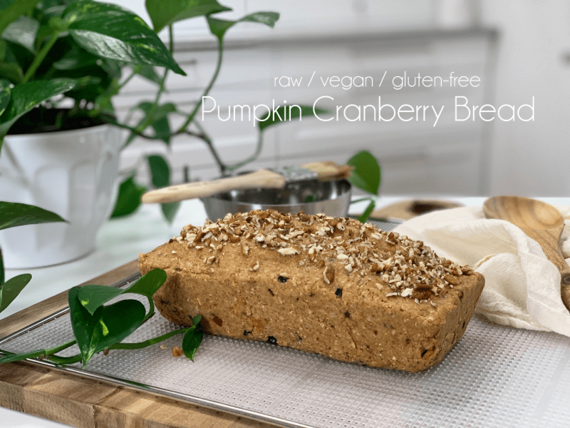
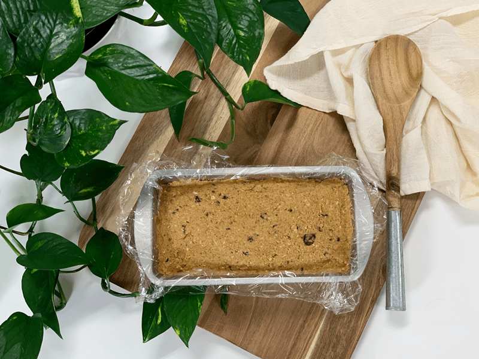
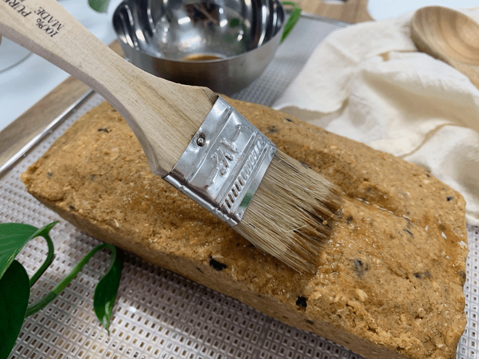
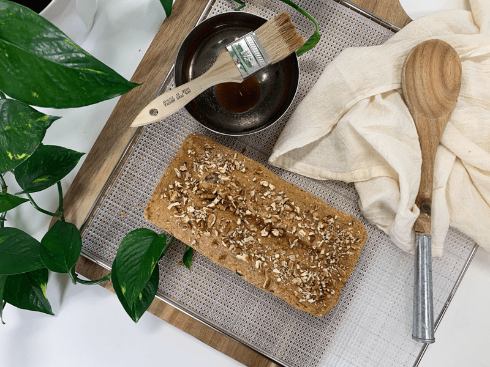
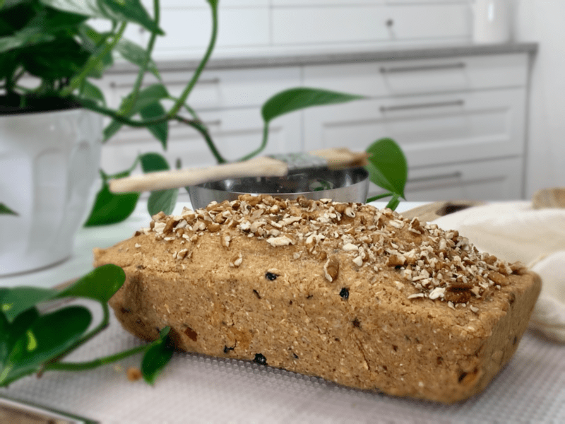
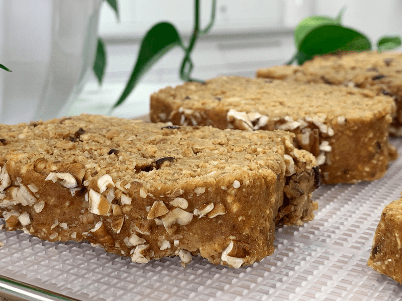
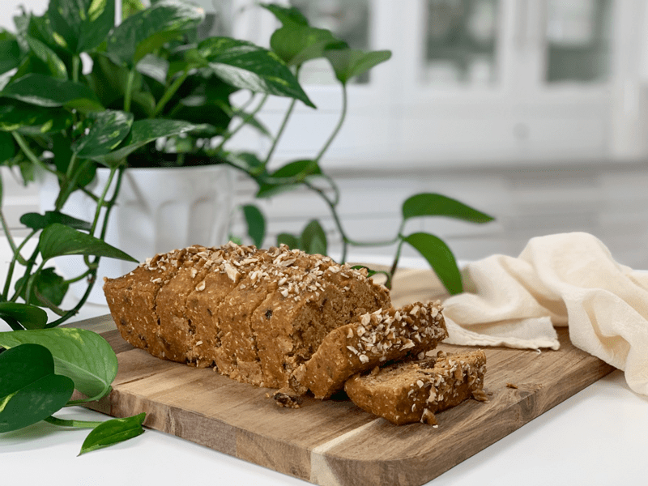

Pumpkin Cranberry Bread
– raw, vegan, gluten-free –
Whenever I make raw bread, it brings out the “gramma” in me. I am not a mom, let alone a gramma, but I have that gene in me. I LOVE taking pictures of raw bread, so much that I am tempted to create a brag book and carry it in my purse. Haha “Hello Ethel, how are you? How are the kids? Oh, I am fine, thank you. Here let me show some of the latest pictures of my raw grand-bread-babies. Oh, I love this photo; they are leaning to the left, oh-oh, and here, they are leaning to the right.” LOL, I crack myself up.

My favorite part of making this bread is after it has dehydrated at 145 degrees for 1 hour, and I remove the loaf to cut it into slices. That first slice, as the blade glides through the bread and as the slice falls to the side… it always put me into the state of awe, it gives my heart a holiday! I never knew I could get so emotional over a piece of bread.
Now might be a good time to warn you that this bread is not light and fluffy as one might imagine when the word bread pops into your mind. Nor, is it loaded with chemicals, unpronounceable ingredients, gluten, dairy, sugar, corn, or soy. It is heavier in weight and leans toward the denser side of things. It smells warm and inviting.
It is known to cause a full stomach to rumble with hunger and cause drool to weep unknowingly from the corner of your mouth. This is not a bread that you just slap a little jam on and eat unconsciously as you check your emails. No, this bread requires, no, it demands your undivided attention. Quiet your mind, close down your computer, set the table, light a few candles, turn on some soft music, prepare your piece of bread, and savor each bite. Give thanks for its nourishment and enjoy it.
Be sure to try the Maple Pumpkin Butter Spread along with it. A match made in heaven.
 Ingredients:
Ingredients:
Yields 9” loaf
Dry Ingredients:
- 1 cup (95 g) rolled, gluten-free oats, soaked & dehydrated
- 3 Tbsp (37 g) flaxseeds, ground
- 3 Tbsp (30 g) raw coconut flour
- 1 Tbsp (8 g) pumpkin spice
- 1 tsp (2 g) ground Ceylon cinnamon
- 1 tsp (7 g) Himalayan pink salt
- 1/2 cup (65 g) dried cranberries
- 1/2 cup (60 g) raw pecans
Wet Ingredients:
Topping:
- 1 tsp (4 g) raw coconut crystals, powdered
- 1 Tbsp (14 g) hot water
- 2 Tbsp (16 g) pecans, crushed for topping
Preparation:
- In the food processor fitted with the “S” blade, place the following ingredients: oats, flax, coconut flour, pumpkin spice, cinnamon, and salt. Pulse together until combined. Place the dry ingredients in a medium-sized bowl and add the cranberries and pecans. Set aside.
- If you already have ground flax seeds on hand, you will use 1/3 of a cup.
- In the same food processor bowl, combine nut pulps, pumpkin puree, date paste, maple syrup, honey, and lemon juice. Blend till everything is well incorporated.
- Depending on how dryer moist your almond pulp is, you may need to add water, so the dough sticks together nicely. If you this, add 1 Tbsp at a time.
- If you don’t want to make walnut pulp, you can use more almond pulp in its place.
- Combine both the wet and dry ingredients in the mixing bowl and with your hands, mix all the ingredients together. This helps to keep the batter “fluffy.”
- Shape into a loaf and place on the mesh sheet that comes with the dehydrator.
- If the batter seems too wet for some odd reason, let it rest for about 15-30 minutes so the flax can do its binding action.
- Have fun with the shaping process. Try to visualize what a baked loaf looks like and sculpt the loaf.
- Score the top of the loaf with a knife. I later use these score marks as a guide in slicing my pieces.
- In a small bowl, combine the coconut crystals and water, stirring it until it dissolves. With a pastry brush, coat the surface of the bread.
- This will add a pleasant sweetness to the crust.
- It will also give the bread that baked appearance, which is kind of fun.
- Sprinkle the 2 Tbsp of crushed pecan on top and gently press them in a bit.
- Dehydrate at 145 degrees for 1 hour. This will create a crust on the outside.
- Remove from the dehydrator, place the loaf on a cutting board, and slice pieces to the desired thickness. Don’t slice the bread on the mesh; you don’t want to risk cutting it.
- I did mine at about 1 inch thick.
- When slicing the bread at this stage, be sure to use a serrated knife (blade has small teeth, this helps to cut through nice and smooth) Also, see-saw back and forth with downward pressure as you cut the slices. This will prevent the dough from squashing down.
- Return the bread to the mesh sheet laying the pieces flat.
- Decrease the temperature to 115 degrees (F) and continue to dehydrate for 6-10 hours.
- As an indicator, if it is dry enough, touch the center of the bread slices. You don’t want it to be doughy, but you also don’t want the bread to dry out too much.
- Shelf life and storage: My personal recommendation would be to store this bread in an air-tight container, in the fridge, for 3-5 days.
- The more moisture that is left in your bread, the shorter the shelf life. Therefore, shelf life will vary with your drying technique. Whenever I make this bread, it never lasts very long enough to spoil.
- Keep in mind, the whole purpose of eating a raw diet is to eat foods at their peak of freshness, so don’t expect this bread to have a long shelf life.
The Institute of Culinary Ingredients™
- Raw Coconut Crystals add a “brown sugar” flavor to a recipe. Read about it (here).
- Dates are a fantastic ingredient for raw food recipes, click (here) to read why.
- Why do I specify Ceylon cinnamon? Click (here) to learn why.
- What is Himalayan pink salt, and does it matter? Click (here) to read more about it.
- Are oats gluten-free? Yes, read more about that (here).
- Are oats raw? Yes, they can be found. Click (here) to learn more.
- Do I need to soak and dehydrate oats? Not required but recommended. Click (here) to see why.
- Learn how to grind your own flaxseeds for ultimate freshness and nutrition. Click (here).
Culinary Explanations:
- Why do I start the dehydrator at 145 degrees (F)? Click (here) to learn the reason behind this.
- When working with fresh ingredients, it is essential to taste test as you build a recipe. Learn why (here).
- Don’t own a dehydrator? Learn how to use your oven (here). I do, however honestly believe that it is a worthwhile investment. Click (here) to learn what I use.
-

-
Shaping the loaf…
-

-
Brushing the glaze on top…
-

-
Pressing the nuts on top…
-

-
Getting ready to slide the loaf into the dehydrator for one hour set at 145 degrees (F).
-

-
Remove the loaf after an hour, slice, lay flat on mesh dehydrator tray, and dry for roughly four more hours at 115 degrees (F).
-

-
You can control how moist or dry you want the bread. If you leave more moisture in it, it is more like a cake bread.
© AmieSue.com